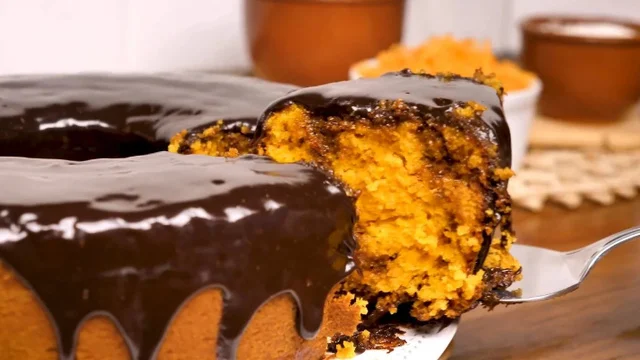

Confira essa clássica receita de bolo de cenoura simples e fácil, nossa campeã de acessos! O bolo de cenoura é um doce muito popular em nosso país, especialmente no café da manhã e no lanche da tarde. Com sua cobertura de chocolate irresistível e seu interior macio e úmido, ela é uma receita que conquista o coração de todos! Veja com a gente como fazer bolo de cenoura, uma receita prática, preparada com auxílio do liquidificador e perfeita para degustar com um cafezinho!
Tempo de preparo : 40min
